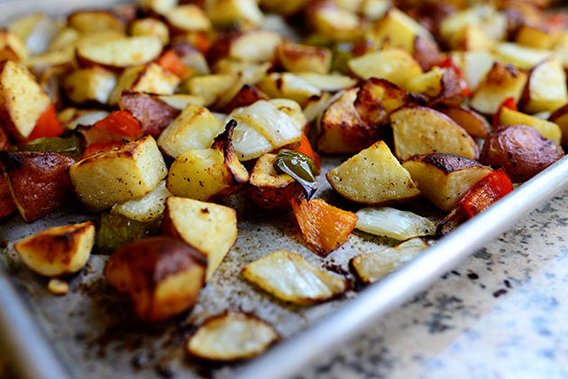

Best Breakfast Potatoes Ever
Prep time:
15 minutes
Difficulty:
Easy
Cook time:
45 minutes
Servings:
12 servings
Ingredients:
- 1 bag (5 Pounds) Red Potatoes, Cut Into Chunks
- 4 cloves Garlic, Minced
- 1 whole Onion, Peeled And Roughly Chopped
- 2 whole Green Bell Pepper, Seeded And Roughly Chopped
- 2 whole Red Bell Pepper, Seeded And Roughly Chopped
- 1/4 cup Olive Oil
- 1/2 stick Butter, Melted
- 1 teaspoon Seasoned Salt
- 1/2 teaspoon Cayenne Pepper
- Kosher Salt And Freshly Ground Black Pepper
Instructions:
Preheat the oven to 425 degrees F. In a large bowl, toss together the potatoes, garlic, onion, green bell pepper, red bell pepper, olive oil, butter, seasoned salt, cayenne pepper and some kosher salt and pepper.
Pour potatoes onto two rimmed baking sheets. Bake for 20 to 25 minutes, shaking the pan twice.
 Raise the heat to 500 degrees and bake until crisp and brown, 15 to 20 minutes, tossing twice.
Sprinkle with a little more salt and pepper before serving.
Raise the heat to 500 degrees and bake until crisp and brown, 15 to 20 minutes, tossing twice.
Sprinkle with a little more salt and pepper before serving.
Raise the heat to 500 degrees and bake until crisp and brown, 15 to 20 minutes, tossing twice.
Sprinkle with a little more salt and pepper before serving.